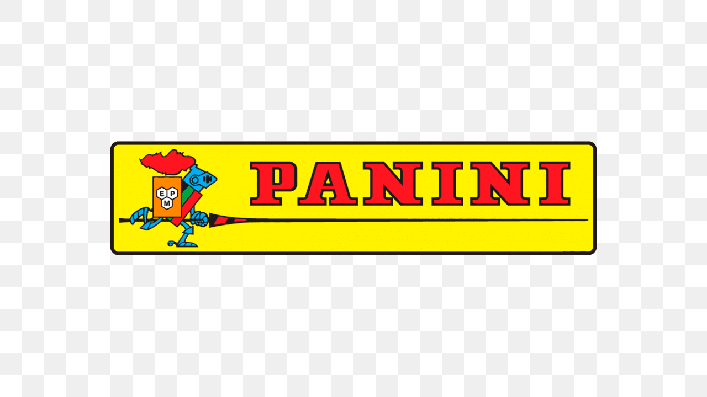

Mangá Demon Slayer
Conheça a obra original que deu origem ao anime Demon Slayer:
Kimetsu no Yaiba.
Sobre o Mangá
Slayer: Kimetsu no Yaiba é um mangá japonês escrito e
ilustrado por Koyoharu Gotouge. A obra acompanha Tanjiro
Kamado em sua jornada como caçador de demônios enquanto busca
uma forma de fazer sua irmã Nezuko voltar a ser humana.
Autora
Koyoharu Gotouge
Koyoharu Gotouge é a autora e ilustradora responsável pela
criação de Demon Slayer: Kimetsu no Yaiba.
Publicação
O mangá começou a ser publicado em 2016 na revista Weekly
Shonen Jump e foi concluído em 2020.
2016 - 2020
Volumes
O mangá possui 23 volumes compilados.
Mangá e Anime
anime de Demon Slayer adapta a história apresentada
originalmente no mangá. A animação trouxe os acontecimentos
da obra para a televisão e também para os filmes, mantendo
os principais acontecimentos da história original.
Onde Comprar o mangá

© Projeto acadêmico - Demon Slayer